Time series data are data points collected over a period of time as a sequence of time gap. Time series data analysis means analyzing the available data to find out the pattern or trend in the data to predict some future values which will, in turn, help more effective and optimize decisions. Time series analysis examples are Financial, Stock prices, Weather data, Utility Studies and many more.
Let’s use the ‘Keeling_Data’ CO2 data again as an example to take a closer look at a time series.
# Read data
Keeling_Data <- read.csv(file = "co2_mm_mlo.csv", header = T)
# Handel missing values
Keeling_Data$co2[which(Keeling_Data$co2<0)] <- NA
for(i in 1:length(Keeling_Data$co2)){
if( is.na(Keeling_Data$co2[i])){
Keeling_Data$co2[i] <- mean(Keeling_Data$co2[(i-2):(i+2)],na.rm=T )
}
}Notice that here we use 5-month average to replace the missing values.
Use ts() to convert a vector into a time series. Use
? to learn more.
# Apply the ts() function
co2 <- ts(Keeling_Data$co2, start=c(1958,3), frequency=12)
# Quick plot
plot(co2, type="l")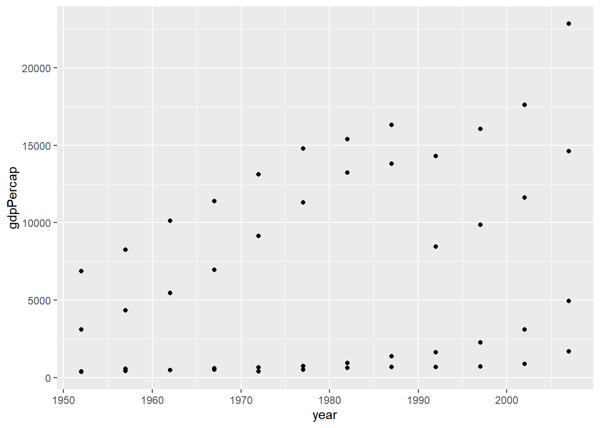
## Time-Series [1:791] from 1958 to 2024: 316 317 318 316 316 ...Generally, an environmental time series, \(Y(t)\), has three components: trend \(T(t)\), seasonality (e.g., 12-month cycle) \(S(t)\), and error \(e(t)\).
\[ Y(t) = T(t) + S(t) + e(t)\] Here
the error \(e(t)\) part is called
white noise. A white noise (\(w_t\)) is a collection of
uncorrelated random variables with mean 0
and finite variance, denoted as: \[w_t \sim
wn(0,\sigma^2)\]
In R, you can use decompose() to quickly decompose a
time series into the three components, particularly for environmental
data set. Here is how it works:
The function first determines the trend component using a
moving average (if filter is NULL, a symmetric
window with equal weights is used), and removes it from the time
series.
Then, the seasonal figure is computed by averaging, for each time unit, over all periods. The seasonal figure is then centered.
Finally, the error component is determined by removing trend and seasonal figure (recycled as needed) from the original time series.
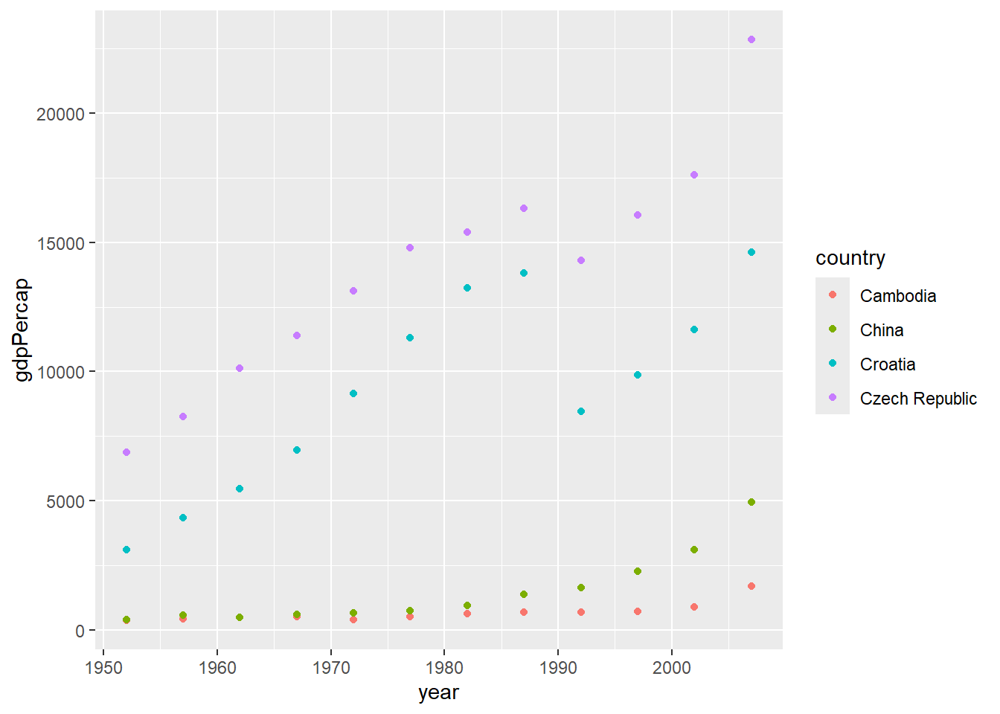
In the above example, co2_components contains the
information/values of the three components. Check the distribution of
the error component (random) to verify it’s a white
noise.
# Plot hist
hist(co2_components$random, prob=TRUE)
# Add a normal pdf curve
curve(dnorm(x, mean=mean(co2_components$random, na.rm=T),
sd=sd(co2_components$random, na.rm=T)),
add=TRUE, col="red")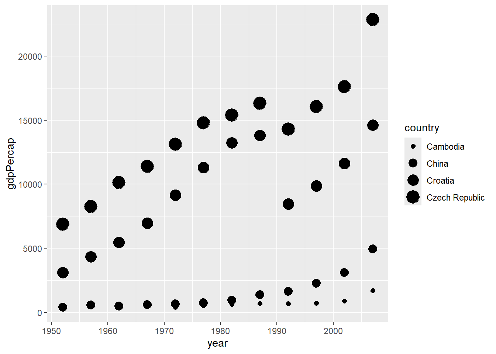
As you can see the distribution is a Gaussian white noise, which is a particularly useful white noise series.
This section is based on the chapters of Time Series Analysis and Its Applications With R Example by Robert H. Shumway and David S. Stoffer.
ARIMA is the abbreviation for AutoRegressive Integrated Moving
Average. Auto Regressive (AR) terms refer to the lags of
the differenced series, Moving Average (MA) terms refer to the
lags of errors and I is the number of difference used to
make the time series stationary.
Here stationary actually refers weakly stationary time series, which is a finite variance process such that:
The mean value of time-series is constant over time
The autovariance function does not change over time
Seasonality effect is minimal
Autoregressive models are based on the idea that the current value of
the series, \(x_t\), can be explained
as a function of p past values, \(x_{t-1}\), \(x_{t-2}\), …, \(x_{t-p}\), where p determines
the number of steps into the past needed to forecast the current
value.
An autoregressive (AR) model of order p,
abbreviated AR(p), is of the form
\[x_t = \phi_1x_{t-1} + \phi_2x_{t-2} + ... + \phi_px_{t-p} + w_t\]
where \(x_t\) is stationary, \(w_t \sim wn(0, \sigma^2_w)\), and \(\phi_1\), \(\phi_2\), …, \(\phi_p\) are constants.
The following R code can be used to obtain two AR(1) models:
# Make two panels
par(mfrow=c(2,1))
# ARIMA model (1,0,0)
plot(arima.sim(list(order=c(1,0,0), ar=.9), n=100), ylab="x",
main=(expression(AR(1)~~~phi==+.9)))
# ARIMA model (1,0,0)
plot(arima.sim(list(order=c(1,0,0), ar=-.9), n=100), ylab="x",
main=(expression(AR(1)~~~phi==-.9)))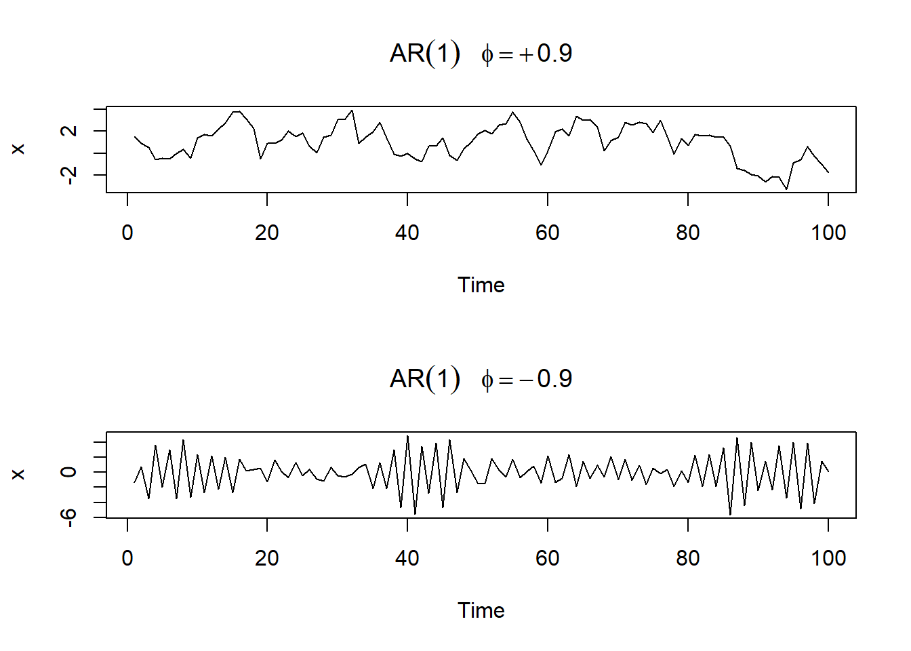
As an alternative to the autoregressive representation in which the
\(x_t\) on the left-hand side of the
equation are assumed to be combined linearly, the moving
average (MA) model of order q, abbreviated as
MA(q), assumes the white noise \(w_t\) on the right-hand side of the
defining equation are combined linearly to form the observed data.
The moving average model of order q, or
MA(q) model, is defined to be
\[x_t = w_t + \theta_1w_{t-1} + \theta_2w_{t-2} + ... + \theta_qw_{t-q} \]
where \(w_t \sim wn(0, \sigma^2_w)\), and \(\theta_1\), \(\theta_2\), …, \(\theta_q\) are parameters.
The following R code can be used to obtain two MA(1) models:
# Make two panels
par(mfrow=c(2,1))
# ARIMA model (0,0,1)
plot(arima.sim(list(order=c(0,0,1), ma=.9), n=100), ylab="x",
main=(expression(MA(1)~~~theta==+.9)))
# ARIMA model (0,0,1)
plot(arima.sim(list(order=c(0,0,1), ma=-.9), n=100), ylab="x",
main=(expression(MA(1)~~~theta==-.9)))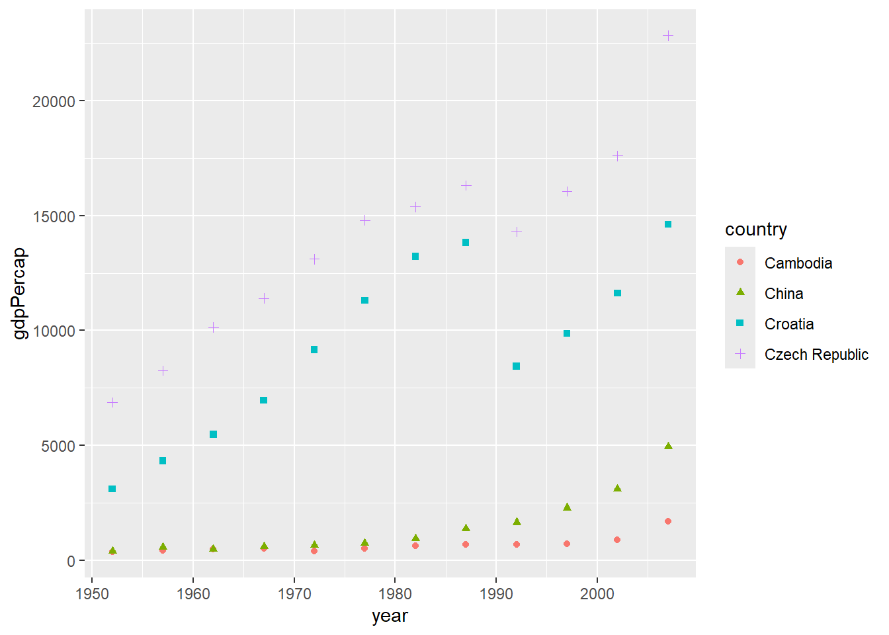
The autocorrelation function (ACF) measures the linear predictability
of the series at time t, say \(x_t\), using only the value \(x_s\).
The partial auto-correlation function (PACF) is a measure of the
correlation between observations of a time series that are separated by
k time units (\(x_t\) and
\(x_{t-k}\)), with linear dependence
removed. In other words, the partial autocorrelation at lag
k is the autocorrelation between \(x_t\) and \(x_{t-k}\) that is not accounted for by lags
1 through k−1.
To show ACF and the PACF of a AR model, AR(2), in R we can use the following lines:
# Compute ACF and PACF of AR(2)
ACF = ARMAacf(ar=c(1.5,-.75), ma=0, 24)[-1]
PACF = ARMAacf(ar=c(1.5,-.75), ma=0, 24, pacf=TRUE)
# Plot ACF and PACF of AR(2)
par(mfrow=c(1,2))
plot(ACF, type="h", xlab="lag", ylim=c(-.8,1)); abline(h=0)
plot(PACF, type="h", xlab="lag", ylim=c(-.8,1)); abline(h=0)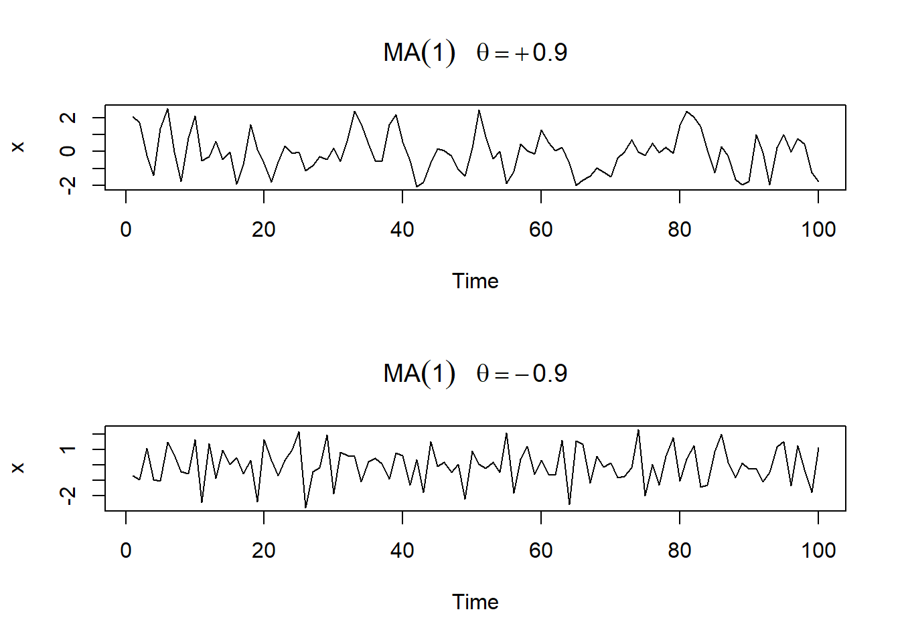
To show ACF and the PACF of a MA model, MA(2), in R we can use the following lines:
# Compute ACF and PACF of MA(2)
ACF = ARMAacf(ar=0, ma=c(0.5,0.6), 24)[-1]
PACF = ARMAacf(ar=0, ma=c(0.5,0.6), 24, pacf=TRUE)
# Plot ACF and PACF of MA(2)
par(mfrow=c(1,2))
plot(ACF, type="h", xlab="lag", ylim=c(-.8,1)); abline(h=0)
plot(PACF, type="h", xlab="lag", ylim=c(-.8,1)); abline(h=0)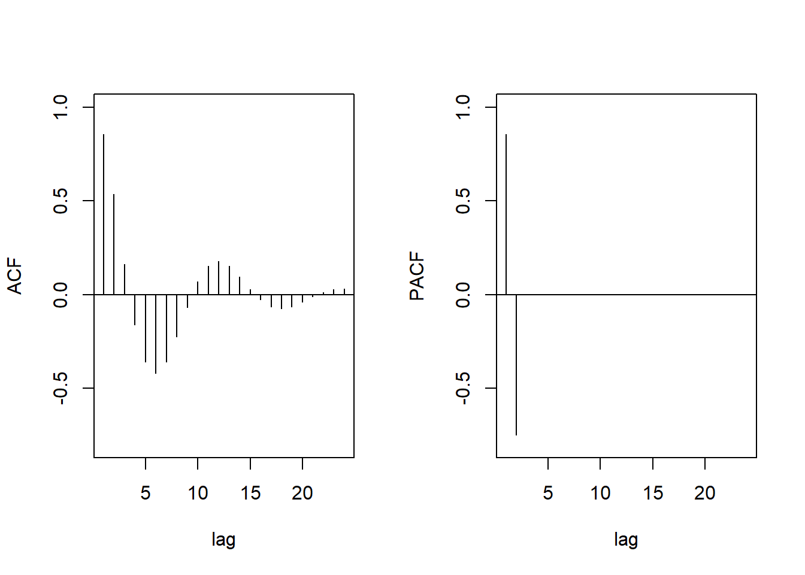
Behavior of the ACF and PACF for ARMA Models can be summarized as:
AR(p): ACF Tails off; PACF Cuts off after lag
p
MA(q): ACF Cuts off after lag q; PACF Tails
off
ARMA(p, q): ACF Tails off; PACF Tails off
Consider the global temperature series record
(gtemp_both) in the astsa package. The data
are the global mean land and ocean temperature index from
1850 to 2023. We want to fit an ARIMA model to
this time series.
# Load data
library(astsa)
# Reset panel
par(mfrow=c(1,1))
# Plot
plot(gtemp_both, type="l", ylab="Global Temperature Deviations")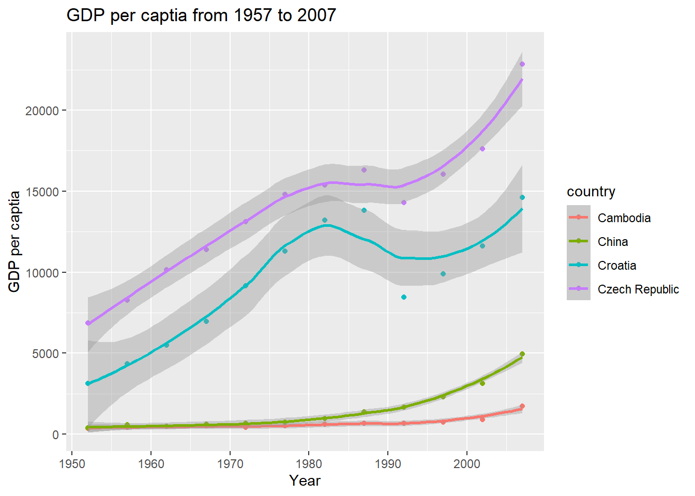
There is a clear trend, so the first step is to de-trend the data.
# Fit a linear model
trModel <- lm(gtemp_both ~ c(1:length(gtemp_both)))
# Get the residuals
residual <- resid(trModel)
# Plot the residual
plot(residual, type="l")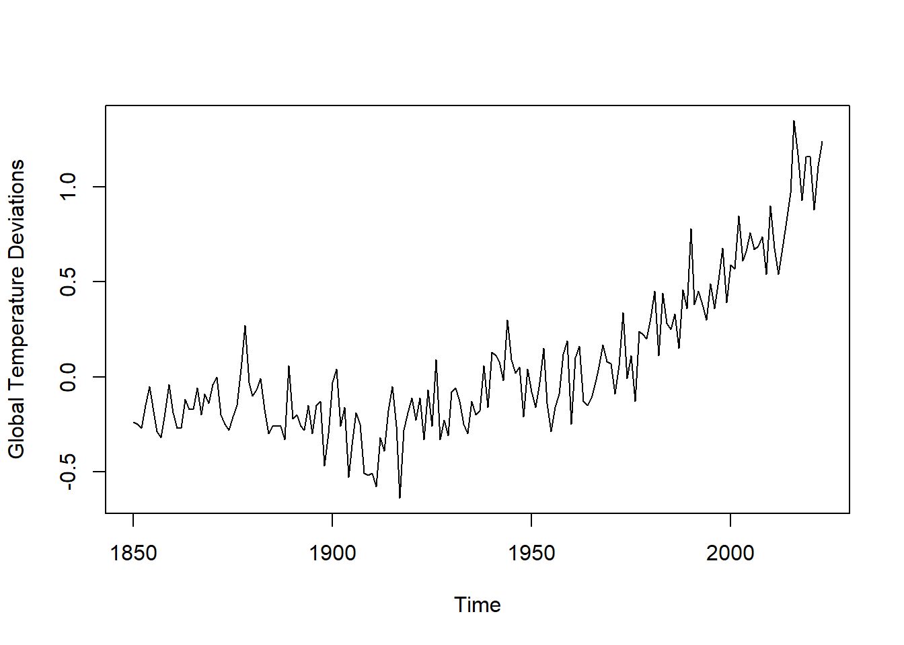
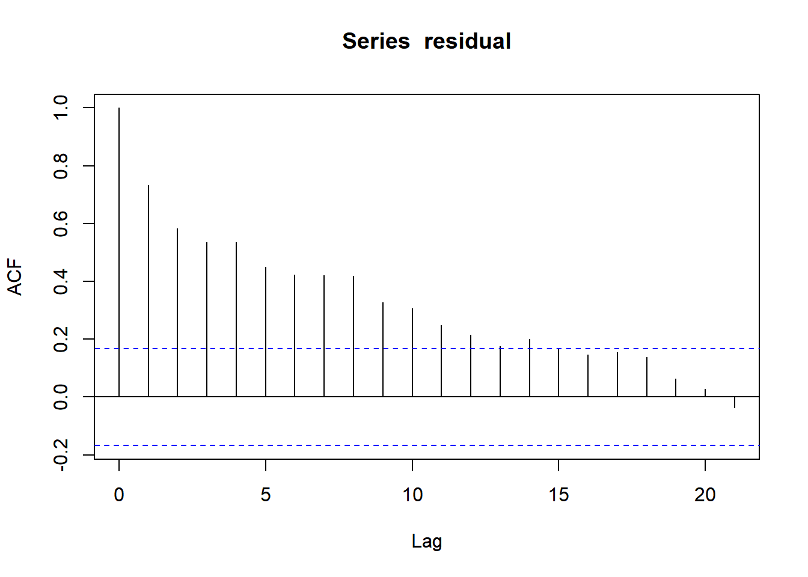
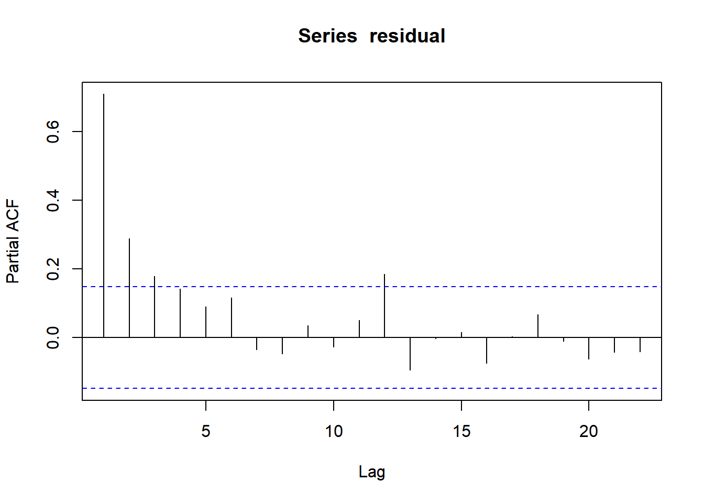
Based on the acf and pacf plots, we guess it may be an ARIMA(1,0,0) model.
Use the data of the Southern Oscillation Index (SOI;
soi) data from the astsa package.
Practice the decompose() function.
Build an ARMA model [Hint: you may want to de-seasonalize the data before fitting the model]